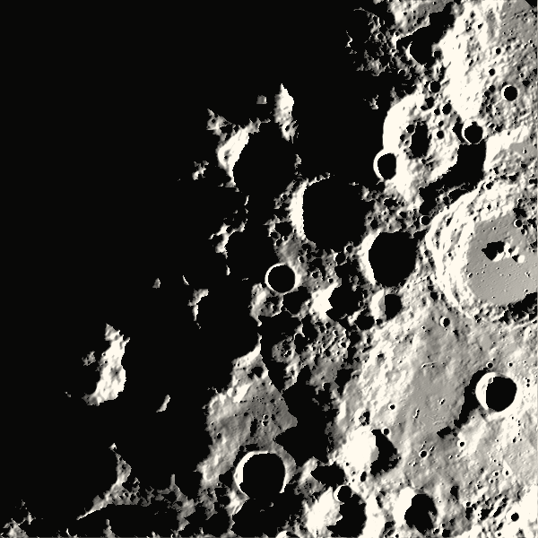

2026 NASA Space Apps Challenge · Lunar Landing Site Navigator
Lunar Landing Site Navigator answers all three for any point near the south pole.
Team Ask How and Why
Kananelo Makhahlela, Software Engineer · Boitumelo Jase, Solutions Engineer
1 / 7A map of the south pole, lit as it will be at any hour of the next year. Shadows come from real NASA terrain.
Select any point. The tool says suitable or not suitable, gives the reasons, and lists the landing dates that work.
The image is the tool's own output for 15 November 2026, 12:00 UTC.

Ridge next to Shackleton crater, 10-day mission
Landing 15 Nov 2026: not suitable. Earth is behind the skyline at touchdown.
Landing 17 to 24 Nov: suitable. Sun up throughout, 8 landing dates in a row.
Next windows: 14 to 21 Dec, 10 to 13 Jan.
Three views of the same model: Mission planner, Educator and Explorer for the public.
4 / 7| Layer | What it does | Data |
|---|---|---|
| 1. Geometry | Where the Sun and Earth sit in the site's sky | JPL Horizons |
| 2. Horizon | The terrain skyline around the site | LRO LOLA elevation map, 240 m |
| 3. Events | Rises, sets and time remaining | |
| 4. Metrics | Sunlight, darkness, Earth view, three solar panel types | |
| 5. Decision | Limits, comparison of sites and dates, room for the schedule to slip |
Runs in the browser as one file. No server, so it cannot go down during a review.
5 / 7Checked
Not yet proven
Try it: jase45343.github.io/Lunar-Landing-Site-Nav
Code: github.com/Jase45343/Lunar-Landing-Site-Nav
Data: NASA JPL Horizons and NASA LRO LOLA. Code and slides written with AI assistance (Claude, Anthropic), directed and reviewed by the team.
7 / 7